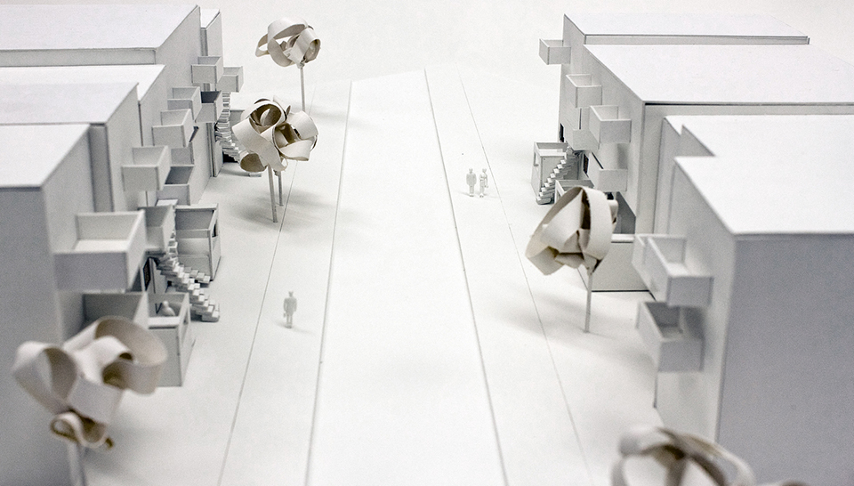
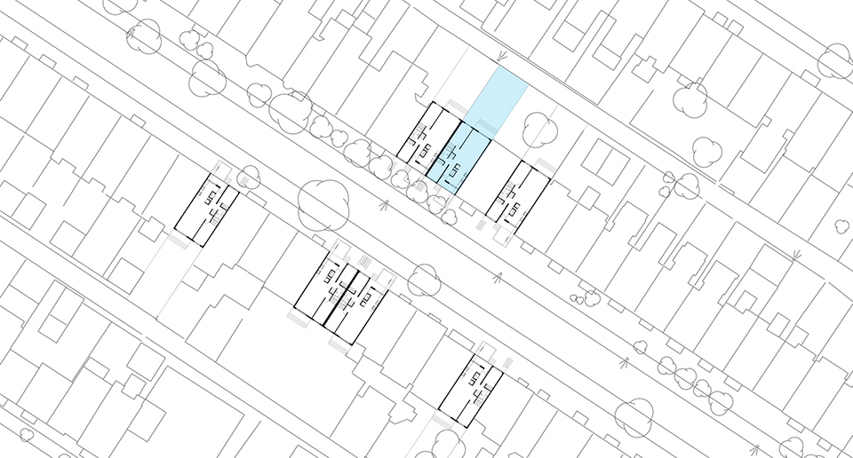
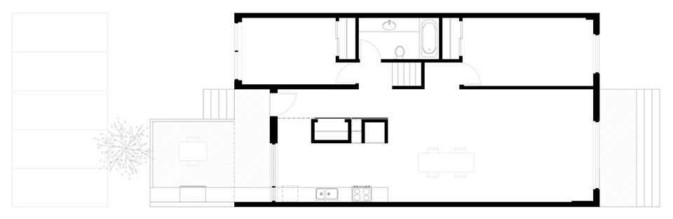

| HOME | EDUCATION | EMPLOIS | FLACON | 5263 FABRE | HUGO | CONTACT |
| 5261 FABRE | |
|
 Maquette - relations exterieurs |
|
| Imaginer et modeliser la renovation d'une cuisine nordique pour une famille contemporaine montrealaise en tenant compte de l'impact que ces changements auront sur la rue. Pour les familles contemporaines, la cuisine est l'un des espaces les plus utilises dans une maison. | C'est pourquoi, le changement majeur, a ete d'amener la cuisine a l'avant afin de dynamiser la rue. Ce geste permet d'avoir une cuisine qui s'adapte aux saisons. Lors de la saison estivale, l'espace devient plus ouvert et accessible alors que lors de la saison hivernale, un sas est cree par des portes amovibles, permettant une economie d'energie. |
|  Plan d'implantation |
|
|  Plan de renovation | |